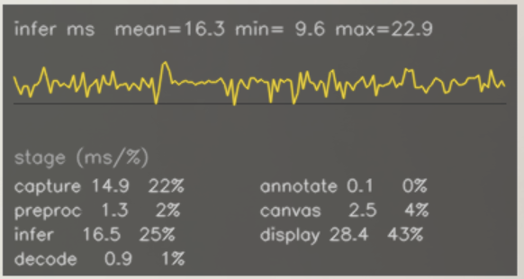

The Reading
The first benchmark run finished, and the screen read 0.263 mean average precision. Nothing crashed. Nothing looked wrong. A YOLOv8n object detector, exported once to ONNX, had just returned a plausible number for a nano-class model, in range, unremarkable, exactly the kind of figure that gets written into a table without a second look. It didn't survive a second look. Neither did three other readings that turned up later, on different hardware, for different reasons.
Three runtimes, three hardware targets, three precision levels across PyTorch, ONNX Runtime, and TensorRT, on a Fedora CPU, a Colab T4, and an Apple M5. The setup is ordinary. What made the project interesting was the apparatus built to measure it.
Before any of what follows was trusted, the export step itself was checked: PyTorch and ONNX Runtime run on the identical input, their outputs compared anchor by anchor. Agreement held to seven significant figures across 42 million evaluated anchor outputs, this was the widest, most demanding check this study ran, and the only one performed before a single benchmark number existed. The model was never in question. Everything below is about what happened to its numbers on the way to the page.
The protocol behind every row that follows: 100 timed inference passes after 10 discarded warmup passes, batch size 1, mean and p95 latency; accuracy measured as mAP@0.5:0.95 across the full 5,000-image COCO val2017 set.
Here is what the pipeline eventually measured, once 0.263 and three other readings had been run back down to what they actually meant.
| Runtime | Hardware | Precision | Mean | p95 | FPS | mAP@.5:.95 | Δ vs FP32 |
|---|---|---|---|---|---|---|---|
| PyTorch CPU | Fedora CPU | FP32 | 77.5 ms | 95.4 ms | 10.5 | 0.3595 | baseline |
| ONNX Runtime CPU EP | Fedora CPU | FP32 | 72.1 ms | 81.4 ms | 12.3 | 0.3595 | baseline |
| TensorRT | Colab T4 | FP32 | 5.88 ms | 7.93 ms | 126 | 0.3576 | baseline |
| TensorRT | Colab T4 | FP16 | 3.44 ms | 3.72 ms | 269 | 0.3571 | −0.0004 |
| TensorRT | Colab T4 | INT8 | 3.22 ms | 3.55 ms | 281 | 0.2919 | −0.0657 |
| PyTorch MPS | Mac M5 | FP32 | 8.79 ms | 11.21 ms | 89 | 0.3576 | baseline |
| PyTorch MPS | Mac M5 | FP16 | 9.56 ms | 10.75 ms | 93 | 0.3577 | +0.0001 |
| ONNX Runtime + CoreML EP | Mac M5 | FP32 | 9.34 ms | 9.93 ms | 101 | 0.3576 | baseline |
One more piece of apparatus needed fixing before any of this was trustworthy, and it's worth stating plainly since six of the eight rows above depend on it. The preprocessing step that resizes every image before inference had no upper clamp on its scale factor, which means it would enlarge a small image to fit the model's input size, something the reference validator this study is measured against explicitly refuses to do. Roughly one in five COCO val2017 images is smaller than 640 pixels in both dimensions, so this wasn't an edge case. Clamping the scale factor moved FP32 and FP16 mAP by about two-thousandths of a point on both the Mac and the T4, independently, which itself is a form of corroboration: two different runtimes, two different machines, the same fix, the same-sized shift. INT8 moved roughly thirteen times further, plausibly because its calibration set runs through the same preprocessing function, so fixing the measuring instrument also changed the thing being measured (a plausible mechanism, not a confirmed one). The Fedora rows above predate this fix. That hardware is gone, so they can't be re-measured, and aren't directly comparable to the rest of the table for that reason.
| Runtime | Hardware | FP32 | FP16 | INT8 |
|---|---|---|---|---|
| PyTorch CPU | Core Ultra 5 125H | ✓ | — | — |
| ONNX Runtime CPU EP | Core Ultra 5 125H | ✓ | — | — |
| TensorRT | Tesla T4 | ✓ | ✓ | ✓ |
| PyTorch MPS | Apple M5 | ✓ | ✓ | — |
| ONNX Runtime + CoreML EP | Apple M5 | ✓ | — | — |
The first honest reading of that table has nothing to do with precision. Fastest and slowest sit roughly twenty-seven times apart at the tail: a Fedora CPU core at 95 ms p95, the fastest Colab T4 result at 3.55 ms p95, and neither CPU runtime clears real time at any thermal state this study measured. At this resolution, hardware acceleration is the entry ticket, not a tuning knob. Every row that isn't a CPU exists because the hardware changed, not because the software got cleverer.
Every number in that table is real. Getting there took four separate readings elsewhere in this study, in the accuracy pipeline, the thermal logs, the live demo, and a power profiler — none of them shown above, each needing a second look before it could be trusted.
The Plausible Number
That first-run 0.263 wasn't a glitch. It was wrong by 27 percent, the fix brought it to 0.359, but nothing about the number itself said so. It sat in a plausible range for a nano-class detector: not zero, not NaN, nothing a smoke test would catch.
The cause was one threshold applied in the wrong place. Detections were filtered to the deployment confidence cutoff (0.5) before being handed to the evaluator, the same cutoff used to decide when a box gets drawn on screen. The evaluator needs the opposite: every detection down to a near-zero confidence, so it can build a full precision-recall curve and integrate under it. Filtering at 0.5 doesn't trim a few low-confidence guesses off the end of that curve. It discards the entire lower half before the evaluator ever sees it, and reports a mean average precision over what's left as though nothing were missing.
A silent default was the real problem: the function formatting predictions for evaluation had quietly inherited the deployment threshold whenever no evaluation threshold was passed in, so the wrong number could resurface from any future call without anyone choosing it. The fix added an explicit evaluation threshold, separate from the deployment one, and forced every caller to state which it meant. The biggest blindspot was that nothing about the number's shape gave the error away.
The Thermal Envelope
The first comparison between ONNX Runtime and PyTorch on the same Fedora CPU looked decisive: ONNX Runtime at 42.7 ms, PyTorch at 87.7 ms, a clean 2.05× advantage worth writing up. It wasn't. PyTorch had run into a sustained thermal throttle, while ONNX Runtime ran into a brief cooling window between tests. Measured again under matched thermal conditions, the real advantage is 7 to 14 percent, a genuine runtime optimization, not the win the first number implied.
The same disease turned up again on its own. PyTorch CPU's mean latency across three separate sessions on identical hardware and identical code: 51 ms, 77.5 ms, 88 ms. ONNX Runtime CPU EP: 43 to 72 ms across the same three sessions. No code changed between them. What changed was thermal state (cold-start turbo boost, partial throttle from prior load, sustained throttle under a long run) and each session landed in a different one. A single-session CPU number, reported without that context, measures whatever the chip happened to be doing that hour and not the runtime. In both cases, one number was standing in for a machine that was never in just one state to begin with.
The Tax You Only Pay Live
The webcam demo runs the exact combination already in the table above, that is ONNX Runtime with CoreML EP, FP32, on the Mac M5, which measured 9.34 ms mean in the isolated benchmark. Live, against a real camera feed, it measures 14.79 ms. Fifty-eight percent higher. Same model, same hardware, same weights.

The live demo's own on-screen chart, tracking per-frame inference latency in real time against a fixed 10 ms reference line.
The isolated benchmark is a tight loop: infer, infer, infer, no gap between calls. The live demo is not, there's a camera read, a decode, a draw, a display between every inference, roughly fifty milliseconds of idle time the CPU has no reason to stay at full clock for. So it doesn't. It downclocks during the gap and pays a real "cold start" tax ramping back up each time inference resumes, confirmed directly against CPU frequency counters, not inferred from the shape of a latency curve. A tight-loop benchmark never sees this gap. A live camera loop always has one.
Neither number is wrong. The isolated figure correctly measures sustained throughput. The live figure correctly measures single-call latency under a bursty access pattern. They simply aren't the same question, and if you sized a deployment SLA off the first one, you'd be wrong by more than half. The hardware never lied. It answered two different questions, and only one of them matches what a live deployment actually asks.
The Documented Exclusion
Apple documents CPUOnly as an exclusion: request it, and CoreML is not supposed to touch the GPU or the Neural Engine. That makes it a convenient control, run a model under CPUOnly, compare against every other compute-unit setting, and if there's no difference, the Neural Engine probably wasn't doing anything in those either. But when that comparison ran, repeatedly, across seven rounds, it found no measurable latency difference between CPUOnly, CPUAndGPU, CPUAndNeuralEngine, and the default ALL — a real, reproducible null result. The conclusion drawn from it was that the Neural Engine wasn't meaningfully engaged.
The latency-null result stands on its own: no compute-unit setting measurably changes speed. What doesn't survive is the argument built on top of it: CPUOnly forbidding Neural Engine access was never the same thing as CPUOnly achieving it. A vendor's own documented API contract needed independent verification before it could stand in as a control, and here, it failed the check. The guarantee was never tested until this study tested it directly, and it didn't hold.
What Was Actually Real
Four sections of apparatus problems isn't the whole story. Some of what the benchmark measured held up completely, starting with the table itself. PyTorch MPS FP32 on the Mac M5 runs at 8.79 ms mean, within 1.5× of the T4 via TensorRT at 5.88 ms FP32. A laptop's on-chip accelerator landing within striking distance of a datacenter GPU, for this model class, is a real, independently-confirmed result. This is scoped narrowly, though: one nano-class model, batch size 1, on the specific exported graph this study measured, where 12 of 233 nodes always fall back to CPU regardless of settings. None of it generalizes past that scope without new measurement, and it's a comparison against exactly one NVIDIA GPU, not a claim about NVIDIA hardware generally.
On the T4, casting from FP32 to FP16 is close to free. Mean latency drops 41 percent, p95 drops 53 percent that is 5.88 ms down to 3.44 ms, and 7.93 ms down to 3.72 ms, and the accuracy delta, −0.0004 mAP, sits below the evaluator's own measurement noise. Every session this study ran, pre-fix and post-fix, agrees: on this T4, FP32 is a dominated option wherever Tensor Core FP16 execution is available.
INT8 is a different story, and a more interesting one. Its p95 ordering relative to FP16 flipped direction across all three sessions (faster once, 17 percent slower once, faster again) with no two of those sessions sharing a software stack, so there's no single mechanism to blame for the flipping. What didn't move was the shape of the accuracy cost, even though its exact size did: −0.042 mAP before the letterbox fix described above, −0.0657 after it, smaller pre-fix, larger post-fix, but a large, non-noise-level penalty in every session regardless. NVIDIA's own TensorRT deployment guidance treats an accuracy cost above one percentage point as a reason to reconsider INT8. Even the smaller pre-fix figure clears that line by roughly 4×; the current figure clears it by 6.6×. The tradeoff INT8 is supposed to offer only has one side of it that's real.
Same cast, same near-zero accuracy cost, two different latency outcomes. FP16 execution on a T4 runs through dedicated Tensor Cores built for exactly this. Apple Silicon's Metal shader path doesn't appear to hit the same bottleneck at a model this small, the casting overhead may simply have nothing to offset, though this study didn't profile deep enough to confirm the mechanism, only the result. A precision decision validated on one accelerator is a decision about that accelerator. It is not, by default, a decision about the next one.
That's what the apparatus survived long enough to actually say, and it adds up to a deployment framework rather than just a table. On the T4 via TensorRT, the answer is FP16: free speed, no accuracy cost, nothing left standing against it. CPU alone, in FP32 at this resolution, is ruled out regardless of runtime, the gap to the GPU path is too large for either CPU runtime to close by being clever about it; INT8 or a lower input resolution might close it, but neither was benchmarked here. INT8 is available, not free, the right call only if the target application can absorb an eighteen-percent relative hit to mAP, never a default. On Apple Silicon, the answer for now is PyTorch MPS at FP32: CoreML EP costs 786 MB of steady-state memory against MPS's 419 MB, for no confirmed Neural Engine benefit over MPS's own direct GPU path.
Zero point two six three looked fine on a screen once. Nothing crashed, nothing flagged, nothing about its shape said wrong. What caught it and the other three, was never a sharper first look. It was going back with a different instrument each time: a second threshold, a thermal log, an idle gap, a power rail. Four kinds of lie, and none of them looked like one, plausibility, machine state, access pattern, a documentation contract. A benchmark number is not a fact about a model. It is a fact about everything standing between the model and the table it lands in.